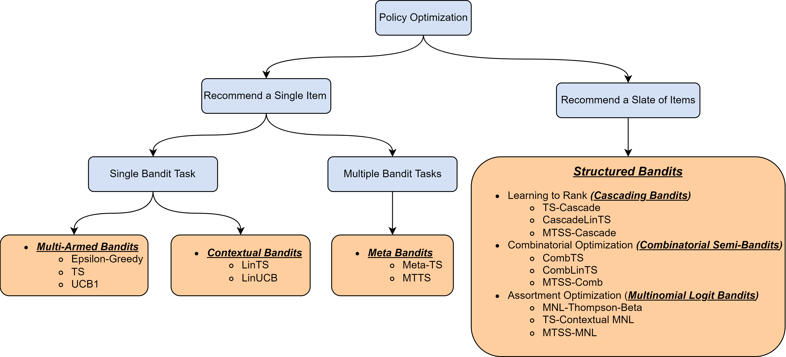

Overview: Bandits ALgorithm#
The bandit problems have received increasing attention recently and have been widely used in fields including clinical trials [1], finance [2], and recommendation systems [3], among others. As the name suggested, a simple and direct example of bandit problem is a row of multiple bandit slot machines at a casino, where the gamblers can sequential choose any machine (i.e., arm) to play and earn the payouts associated with that arm at each round. Any similar problems involving sequential decision-making can be expressed in the language of bandits using three elements: an agent, an environment, and sequences of observations made up of tuples (\(A_t\), \(R_t\)), \(t=1,\cdots, T\). Specifically , the agent will select an action at each round t, \(A_t\) and then receive a reward \(R_t\) produced by the environment given the action \(A_t\). Denote the reward that would be received if arm \(a\) is played as \(R_t(a)\), which we will refer to as the potential reward of arm \(a\). Since the distributions of the potential reward are typically unknown in real-world applications, the central task of a bandit algorithm is to learn the distributions from feedback received and find the optimal item to maximize the cumulative rewards or, equivalently, to minimize the cumulative regret.
Based on how the rewards are generated, Bandit problems can be divided into two classes. While the Stochastic Stationary Bandits [4] assume that the potential outcome (reward) \(R_t(a)\) is generated following a distribution, which is dependent only on the treatment (action) \(a\) and the information observed at the current round and not known a prior, the Adversarial Bandits [4] make no distributional assumption on the rewards. In this pacakge, the Stochastic Stationary Bandits are the primary focus, and four distinct classes of it will be introduced along with related laerning algorithms, including
Multi-Armed Bandits,
Contextual Bandits,
Meta Bandits,
Structures Bandits.
The following is a map briefly illustrating what will be included.
{kind=link}
Reference#
[1] Durand, A., Achilleos, C., Iacovides, D., Strati, K., Mitsis, G. D., and Pineau, J. (2018). Contextual bandits for adapting treatment in a mouse model of de novo carcinogenesis. In Machine learning for healthcare conference, pages 67–82. PMLR.
[2] Shen, W., Wang, J., Jiang, Y.-G., and Zha, H. (2015). Portfolio choices with orthogonal bandit learning. In Twenty-fourth international joint conference on artificial intelligence.
[3] Zhou, Q., Zhang, X., Xu, J., and Liang, B. (2017). Large-scale bandit approaches for recommender systems. In International Conference on Neural Information Processing, pages 811–821. Springer.
[4] Bouneffouf, D., Bouzeghoub, A., & Gançarski, A. L. (2012, November). A contextual-bandit algorithm for mobile context-aware recommender system. In International conference on neural information processing (pp. 324-331). Springer, Berlin, Heidelberg.